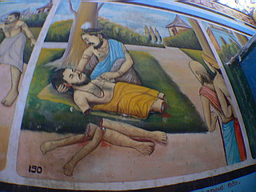

さて、いよいよ大仏遊びの時間です。
と、その前に大仏さんの前の庭チェック。
等身大のコンクリ坊さんが並んでいるのだが、何故かスーツ姿の人が。誰？
気を取り直して大仏に向かう。
1960年代に建設されたという大仏さん、若干コメカミの辺りに補修の跡が窺えるが全体的に状態は良好である。
アタマの後ろに放射状に伸びているのは参拝者のお願いをキャッチするためのアンテナ、ではなく一本一本に電球が仕込まれた光背である。
夜になるとライトアップされるのだろうか。見たい。
頭の上にあるねじりんぼうは…何でしょ？まあ、大事なモノなんでしょう。毒っぽい3色ソフトクリームみたいですね。
横から見るとこんな感じ。
それにしても大きい。
某ガイドブックによると高さは50メートルもあるという。
後ろの10階建ての建物よりも高いので確かにその位の大きさはあるのだろう。
先に紹介したWeherehenaTempleの大仏さんよりもねじりんぼう分だけ大きいという感じですかね。
まあ、見た目そんなに変わらないような気もするが。
大仏の胎内には入ることは出来ないが背後の背もたれ状の建物に入ることが出来る。
大仏さんの右側に入口があり早速おじゃましますよ、っと。
内部は何となく予想はしていたのだが、やっぱりイラストみっちり。
「壁が空いてたらとりあえず描く！」〜スリランカ仏教界の不文律である。
何故か地元のコドモがカメラを向けるとささっとフレームに入ってくる。
最初は「ああ、写真に写りたいんだな〜」とあまり気にしなかったのだが、このままではガキンチョ写真集になってしまいそうなので「ボク、チョットどいてくれるかな〜」と言うと「どいてやるから100ルピーくれ」と言われてしまいました…
うむ〜物乞いもここまでくると立派なもんだ、と妙に感心した。
「絶っ対払わないかんな」と言ったらあっさり退散したが、後で写真を見てみると端っこの方にちょっぴり写ってたりして。
くぅ〜、ガキンチョめ…
イラストの方は相変わらずの劇画調。先ほどの地獄で見たようなポンチ絵はなかった。
壁はもちろんの事、階段の裏側にまで描き込む根性には恐れ入りました。
まあ、よくそこまで描く題材のある事よ。
3階、4階と上っていく。
イラストで埋め尽くされているものの、それ以外は何もない単調な造り。
死亡の塔みたく各フロアにボスキャラがいてくれてもこちらは全然構わないんですけど。
よく見ると結構邪悪キャラがあちこちに。
矢を打ちこまれた毛濃いお方は先ほどのWeherehenaTempleでも見かけたような…
↓何故か海難救助。
↓何故か衝撃シーン。

そんなこんなで7階まで上って来た。
矢印があり、それに従うと一回テラスに出てさらに8階に到る外階段がある。
やや単調なフロアが続いたがいよいよここからが大仏ギミックの本領だろうか。
で、8階。
部屋はやや狭く入り組んでいるが、その先にまたしても例のガキンチョが。
…100ルピーくれ…だからあげないっつーの。

そのガキンチョの背後にあるモノを見てビックリ！！！！
こ、これは…
大仏さんの後頭部がめり込んでいるではないかっ！！！！